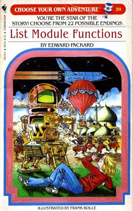

Full name: index.a
Full name: index.b
val float : value:'T -> float (requires member op_Explicit)
Full name: Microsoft.FSharp.Core.Operators.float
--------------------
type float = System.Double
Full name: Microsoft.FSharp.Core.float
--------------------
type float<'Measure> = float
Full name: Microsoft.FSharp.Core.float<_>
Full name: index.c
Full name: index.r
val ref : value:'T -> 'T ref
Full name: Microsoft.FSharp.Core.Operators.ref
--------------------
type 'T ref = Ref<'T>
Full name: Microsoft.FSharp.Core.ref<_>
Full name: Microsoft.FSharp.Core.ExtraTopLevelOperators.printfn
type Point =
new : x:int * y:int -> Point
member X : int
member Y : int
Full name: index.Point
--------------------
new : x:int * y:int -> Point
val int : value:'T -> int (requires member op_Explicit)
Full name: Microsoft.FSharp.Core.Operators.int
--------------------
type int = int32
Full name: Microsoft.FSharp.Core.int
--------------------
type int<'Measure> = int
Full name: Microsoft.FSharp.Core.int<_>
Full name: index.Point.X
Full name: index.Point.Y
Full name: index.index
Full name: index.MyMod.myFunction
Full name: index.MyMod.myFunction2
Full name: index.MyMod.highOrderFunction
Full name: index.MyMod.recursiveFuncion
Full name: index.MyMod.memoizeFunction
type Dictionary<'TKey,'TValue> =
new : unit -> Dictionary<'TKey, 'TValue> + 5 overloads
member Add : key:'TKey * value:'TValue -> unit
member Clear : unit -> unit
member Comparer : IEqualityComparer<'TKey>
member ContainsKey : key:'TKey -> bool
member ContainsValue : value:'TValue -> bool
member Count : int
member GetEnumerator : unit -> Enumerator<'TKey, 'TValue>
member GetObjectData : info:SerializationInfo * context:StreamingContext -> unit
member Item : 'TKey -> 'TValue with get, set
...
nested type Enumerator
nested type KeyCollection
nested type ValueCollection
Full name: System.Collections.Generic.Dictionary<_,_>
--------------------
System.Collections.Generic.Dictionary() : unit
System.Collections.Generic.Dictionary(capacity: int) : unit
System.Collections.Generic.Dictionary(comparer: System.Collections.Generic.IEqualityComparer<'TKey>) : unit
System.Collections.Generic.Dictionary(dictionary: System.Collections.Generic.IDictionary<'TKey,'TValue>) : unit
System.Collections.Generic.Dictionary(capacity: int, comparer: System.Collections.Generic.IEqualityComparer<'TKey>) : unit
System.Collections.Generic.Dictionary(dictionary: System.Collections.Generic.IDictionary<'TKey,'TValue>, comparer: System.Collections.Generic.IEqualityComparer<'TKey>) : unit
Full name: Microsoft.FSharp.Core.Operators.not
static member MyFunction : ?x:int * ?y:int -> int
static member MyFunction2 : [<ParamArray>] rest:int array -> int
Full name: index.MyClass
Full name: index.MyClass.MyFunction
Full name: Microsoft.FSharp.Core.Operators.defaultArg
Full name: index.MyClass.MyFunction2
type ParamArrayAttribute =
inherit Attribute
new : unit -> ParamArrayAttribute
Full name: System.ParamArrayAttribute
--------------------
ParamArrayAttribute() : unit
Full name: Microsoft.FSharp.Core.array<_>
member Clone : unit -> obj
member CopyTo : array:Array * index:int -> unit + 1 overload
member GetEnumerator : unit -> IEnumerator
member GetLength : dimension:int -> int
member GetLongLength : dimension:int -> int64
member GetLowerBound : dimension:int -> int
member GetUpperBound : dimension:int -> int
member GetValue : [<ParamArray>] indices:int[] -> obj + 7 overloads
member Initialize : unit -> unit
member IsFixedSize : bool
...
Full name: System.Array
Full name: Microsoft.FSharp.Collections.Array.reduce
type AbstractClassAttribute =
inherit Attribute
new : unit -> AbstractClassAttribute
Full name: Microsoft.FSharp.Core.AbstractClassAttribute
--------------------
new : unit -> AbstractClassAttribute
type AbstractBaseClass =
new : unit -> AbstractBaseClass
abstract member Add : int -> int -> int
abstract member Pi : float
override Add : x:int -> y:int -> int
Full name: index.AbstractBaseClass
--------------------
new : unit -> AbstractBaseClass
Full name: index.AbstractBaseClass.Add
Full name: index.AbstractBaseClass.Pi
val float : value:'T -> float (requires member op_Explicit)
Full name: Microsoft.FSharp.Core.Operators.float
--------------------
type float = Double
Full name: Microsoft.FSharp.Core.float
--------------------
type float<'Measure> = float
Full name: Microsoft.FSharp.Core.float<_>
Full name: index.AbstractBaseClass.Add
interface
abstract member Square : float -> float
end
Full name: index.MyInterface
Full name: index.MyInterface.Square
type StructAttribute =
inherit Attribute
new : unit -> StructAttribute
Full name: Microsoft.FSharp.Core.StructAttribute
--------------------
new : unit -> StructAttribute
type MyStruct =
struct
new : x:float * y:float -> MyStruct
member X : float
member Y : float
end
Full name: index.MyStruct
--------------------
MyStruct()
new : x:float * y:float -> MyStruct
Full name: index.MyStruct.X
Full name: index.MyStruct.Y
type DerivedClass =
inherit AbstractBaseClass
interface MyInterface
new : param1:int -> DerivedClass
new : param1:int * param2:int -> DerivedClass
override Add : int -> int -> int
member Area : int
member Area2 : int
override Pi : float
member Area : int with set
member Area2 : int with set
...
Full name: index.DerivedClass
--------------------
new : param1:int -> DerivedClass
new : param1:int * param2:int -> DerivedClass
Full name: index.DerivedClass.Add
Full name: index.DerivedClass.Pi
Full name: index.DerivedClass.Area
Full name: Microsoft.FSharp.Core.ExtraTopLevelOperators.set
Full name: index.DerivedClass.StaticValue
Full name: index.DerivedClass.Square
Full name: index.o1
Full name: index.o2
Full name: index.o3
Full name: index.reverse
Full name: index.myTuple
Full name: index.li
{id: int;
qt: float;
name: string;
li: int list;}
Full name: index.MyRecord
val string : value:'T -> string
Full name: Microsoft.FSharp.Core.Operators.string
--------------------
type string = String
Full name: Microsoft.FSharp.Core.string
Full name: Microsoft.FSharp.Collections.list<_>
Full name: index.myRecord
Full name: Microsoft.FSharp.Core.Operators.id
Full name: index.id2
Full name: index.name2
Full name: index.myRecord2
| Var of string
| Fun of string * Term
| App of Term * Term
Full name: index.Term
Full name: index.formatTerm
Full name: Microsoft.FSharp.Core.ExtraTopLevelOperators.sprintf
| Rectangle of width: float * length: float
| Circle of radius: float
| Prism of width: float * float * height: float
Full name: index.Shape
Full name: index.matchShapeList
Full name: Microsoft.FSharp.Core.Operators.failwith
Full name: index.( |Even|Odd| )
Full name: index.( |Even|Odd| )
struct
member CompareTo : value:obj -> int + 1 overload
member Equals : obj:obj -> bool + 1 overload
member GetHashCode : unit -> int
member GetTypeCode : unit -> TypeCode
member ToString : unit -> string + 3 overloads
static val MaxValue : int
static val MinValue : int
static member Parse : s:string -> int + 3 overloads
static member TryParse : s:string * result:int -> bool + 1 overload
end
Full name: System.Int32
Int32.TryParse(s: string, style: Globalization.NumberStyles, provider: IFormatProvider, result: byref<int>) : bool
struct
member CompareTo : value:obj -> int + 1 overload
member Equals : obj:obj -> bool + 1 overload
member GetHashCode : unit -> int
member GetTypeCode : unit -> TypeCode
member ToString : unit -> string + 3 overloads
static val MinValue : float
static val MaxValue : float
static val Epsilon : float
static val NegativeInfinity : float
static val PositiveInfinity : float
...
end
Full name: System.Double
Double.TryParse(s: string, style: Globalization.NumberStyles, provider: IFormatProvider, result: byref<float>) : bool
Full name: index.( |Integer|_| )
Full name: index.( |Float|_| )
type Regex =
new : pattern:string -> Regex + 1 overload
member GetGroupNames : unit -> string[]
member GetGroupNumbers : unit -> int[]
member GroupNameFromNumber : i:int -> string
member GroupNumberFromName : name:string -> int
member IsMatch : input:string -> bool + 1 overload
member Match : input:string -> Match + 2 overloads
member Matches : input:string -> MatchCollection + 1 overload
member Options : RegexOptions
member Replace : input:string * replacement:string -> string + 5 overloads
...
Full name: System.Text.RegularExpressions.Regex
--------------------
Regex(pattern: string) : unit
Regex(pattern: string, options: RegexOptions) : unit
Regex.Match(input: string, pattern: string, options: RegexOptions) : Match
module List
from Microsoft.FSharp.Collections
--------------------
type List<'T> =
| ( [] )
| ( :: ) of Head: 'T * Tail: 'T list
interface IEnumerable
interface IEnumerable<'T>
member GetSlice : startIndex:int option * endIndex:int option -> 'T list
member Head : 'T
member IsEmpty : bool
member Item : index:int -> 'T with get
member Length : int
member Tail : 'T list
static member Cons : head:'T * tail:'T list -> 'T list
static member Empty : 'T list
Full name: Microsoft.FSharp.Collections.List<_>
Full name: Microsoft.FSharp.Collections.List.tail
Full name: index.parseDate
Full name: index.( |ParseRegex|_| )
type DateTime =
struct
new : ticks:int64 -> DateTime + 10 overloads
member Add : value:TimeSpan -> DateTime
member AddDays : value:float -> DateTime
member AddHours : value:float -> DateTime
member AddMilliseconds : value:float -> DateTime
member AddMinutes : value:float -> DateTime
member AddMonths : months:int -> DateTime
member AddSeconds : value:float -> DateTime
member AddTicks : value:int64 -> DateTime
member AddYears : value:int -> DateTime
...
end
Full name: System.DateTime
--------------------
DateTime()
(+0 other overloads)
DateTime(ticks: int64) : unit
(+0 other overloads)
DateTime(ticks: int64, kind: DateTimeKind) : unit
(+0 other overloads)
DateTime(year: int, month: int, day: int) : unit
(+0 other overloads)
DateTime(year: int, month: int, day: int, calendar: Globalization.Calendar) : unit
(+0 other overloads)
DateTime(year: int, month: int, day: int, hour: int, minute: int, second: int) : unit
(+0 other overloads)
DateTime(year: int, month: int, day: int, hour: int, minute: int, second: int, kind: DateTimeKind) : unit
(+0 other overloads)
DateTime(year: int, month: int, day: int, hour: int, minute: int, second: int, calendar: Globalization.Calendar) : unit
(+0 other overloads)
DateTime(year: int, month: int, day: int, hour: int, minute: int, second: int, millisecond: int) : unit
(+0 other overloads)
DateTime(year: int, month: int, day: int, hour: int, minute: int, second: int, millisecond: int, kind: DateTimeKind) : unit
(+0 other overloads)
Full name: index.max
Full name: index.makeNoise
Full name: Microsoft.FSharp.Core.unit
type Dog =
new : unit -> Dog
member MakeNoise : unit -> unit
Full name: index.Dog
--------------------
new : unit -> Dog
Full name: index.Dog.MakeNoise
type Cat =
new : unit -> Cat
member MakeNoise : unit -> unit
Full name: index.Cat
--------------------
new : unit -> Cat
Full name: index.Cat.MakeNoise
Full name: Microsoft.FSharp.Collections.List.map
Full name: Microsoft.FSharp.Collections.Array.map
from Microsoft.FSharp.Collections
Full name: Microsoft.FSharp.Collections.Seq.map
val seq : sequence:seq<'T> -> seq<'T>
Full name: Microsoft.FSharp.Core.Operators.seq
--------------------
type seq<'T> = Collections.Generic.IEnumerable<'T>
Full name: Microsoft.FSharp.Collections.seq<_>
type Random =
new : unit -> Random + 1 overload
member Next : unit -> int + 2 overloads
member NextBytes : buffer:byte[] -> unit
member NextDouble : unit -> float
Full name: System.Random
--------------------
Random() : unit
Random(Seed: int) : unit
Full name: Microsoft.FSharp.Collections.Seq.initInfinite
module Map
from Microsoft.FSharp.Collections
--------------------
type Map<'Key,'Value (requires comparison)> =
interface IEnumerable
interface IComparable
interface IEnumerable<KeyValuePair<'Key,'Value>>
interface ICollection<KeyValuePair<'Key,'Value>>
interface IDictionary<'Key,'Value>
new : elements:seq<'Key * 'Value> -> Map<'Key,'Value>
member Add : key:'Key * value:'Value -> Map<'Key,'Value>
member ContainsKey : key:'Key -> bool
override Equals : obj -> bool
member Remove : key:'Key -> Map<'Key,'Value>
...
Full name: Microsoft.FSharp.Collections.Map<_,_>
--------------------
new : elements:seq<'Key * 'Value> -> Map<'Key,'Value>
Full name: Microsoft.FSharp.Core.Operators.box
Full name: Microsoft.FSharp.Core.Operators.unbox
Full name: Microsoft.FSharp.Collections.Seq.filter
Full name: Microsoft.FSharp.Collections.Seq.take
Full name: Microsoft.FSharp.Collections.Seq.sortBy
Full name: Microsoft.FSharp.Collections.Seq.toList
type Timer =
inherit Component
new : unit -> Timer + 1 overload
member AutoReset : bool with get, set
member BeginInit : unit -> unit
member Close : unit -> unit
member Enabled : bool with get, set
member EndInit : unit -> unit
member Interval : float with get, set
member Site : ISite with get, set
member Start : unit -> unit
member Stop : unit -> unit
...
Full name: System.Timers.Timer
--------------------
Timers.Timer() : unit
Timers.Timer(interval: float) : unit
from Microsoft.FSharp.Control
Full name: Microsoft.FSharp.Control.Observable.map
Full name: Microsoft.FSharp.Control.Observable.merge
Full name: Microsoft.FSharp.Control.Observable.pairwise
Full name: Microsoft.FSharp.Control.Observable.partition
Full name: Microsoft.FSharp.Core.ExtraTopLevelOperators.async
inherit MarshalByRefObject
member Abort : unit -> unit
member AuthenticationLevel : AuthenticationLevel with get, set
member BeginGetRequestStream : callback:AsyncCallback * state:obj -> IAsyncResult
member BeginGetResponse : callback:AsyncCallback * state:obj -> IAsyncResult
member CachePolicy : RequestCachePolicy with get, set
member ConnectionGroupName : string with get, set
member ContentLength : int64 with get, set
member ContentType : string with get, set
member Credentials : ICredentials with get, set
member EndGetRequestStream : asyncResult:IAsyncResult -> Stream
...
Full name: System.Net.WebRequest
Net.WebRequest.Create(requestUriString: string) : Net.WebRequest
type Uri =
new : uriString:string -> Uri + 5 overloads
member AbsolutePath : string
member AbsoluteUri : string
member Authority : string
member DnsSafeHost : string
member Equals : comparand:obj -> bool
member Fragment : string
member GetComponents : components:UriComponents * format:UriFormat -> string
member GetHashCode : unit -> int
member GetLeftPart : part:UriPartial -> string
...
Full name: System.Uri
--------------------
Uri(uriString: string) : unit
Uri(uriString: string, uriKind: UriKind) : unit
Uri(baseUri: Uri, relativeUri: string) : unit
Uri(baseUri: Uri, relativeUri: Uri) : unit
type StreamReader =
inherit TextReader
new : stream:Stream -> StreamReader + 9 overloads
member BaseStream : Stream
member Close : unit -> unit
member CurrentEncoding : Encoding
member DiscardBufferedData : unit -> unit
member EndOfStream : bool
member Peek : unit -> int
member Read : unit -> int + 1 overload
member ReadLine : unit -> string
member ReadToEnd : unit -> string
...
Full name: System.IO.StreamReader
--------------------
IO.StreamReader(stream: IO.Stream) : unit
IO.StreamReader(path: string) : unit
IO.StreamReader(stream: IO.Stream, detectEncodingFromByteOrderMarks: bool) : unit
IO.StreamReader(stream: IO.Stream, encoding: Text.Encoding) : unit
IO.StreamReader(path: string, detectEncodingFromByteOrderMarks: bool) : unit
IO.StreamReader(path: string, encoding: Text.Encoding) : unit
IO.StreamReader(stream: IO.Stream, encoding: Text.Encoding, detectEncodingFromByteOrderMarks: bool) : unit
IO.StreamReader(path: string, encoding: Text.Encoding, detectEncodingFromByteOrderMarks: bool) : unit
IO.StreamReader(stream: IO.Stream, encoding: Text.Encoding, detectEncodingFromByteOrderMarks: bool, bufferSize: int) : unit
IO.StreamReader(path: string, encoding: Text.Encoding, detectEncodingFromByteOrderMarks: bool, bufferSize: int) : unit
type Async
static member AsBeginEnd : computation:('Arg -> Async<'T>) -> ('Arg * AsyncCallback * obj -> IAsyncResult) * (IAsyncResult -> 'T) * (IAsyncResult -> unit)
static member AwaitEvent : event:IEvent<'Del,'T> * ?cancelAction:(unit -> unit) -> Async<'T> (requires delegate and 'Del :> Delegate)
static member AwaitIAsyncResult : iar:IAsyncResult * ?millisecondsTimeout:int -> Async<bool>
static member AwaitTask : task:Task -> Async<unit>
static member AwaitTask : task:Task<'T> -> Async<'T>
static member AwaitWaitHandle : waitHandle:WaitHandle * ?millisecondsTimeout:int -> Async<bool>
static member CancelDefaultToken : unit -> unit
static member Catch : computation:Async<'T> -> Async<Choice<'T,exn>>
static member FromBeginEnd : beginAction:(AsyncCallback * obj -> IAsyncResult) * endAction:(IAsyncResult -> 'T) * ?cancelAction:(unit -> unit) -> Async<'T>
static member FromBeginEnd : arg:'Arg1 * beginAction:('Arg1 * AsyncCallback * obj -> IAsyncResult) * endAction:(IAsyncResult -> 'T) * ?cancelAction:(unit -> unit) -> Async<'T>
static member FromBeginEnd : arg1:'Arg1 * arg2:'Arg2 * beginAction:('Arg1 * 'Arg2 * AsyncCallback * obj -> IAsyncResult) * endAction:(IAsyncResult -> 'T) * ?cancelAction:(unit -> unit) -> Async<'T>
static member FromBeginEnd : arg1:'Arg1 * arg2:'Arg2 * arg3:'Arg3 * beginAction:('Arg1 * 'Arg2 * 'Arg3 * AsyncCallback * obj -> IAsyncResult) * endAction:(IAsyncResult -> 'T) * ?cancelAction:(unit -> unit) -> Async<'T>
static member FromContinuations : callback:(('T -> unit) * (exn -> unit) * (OperationCanceledException -> unit) -> unit) -> Async<'T>
static member Ignore : computation:Async<'T> -> Async<unit>
static member OnCancel : interruption:(unit -> unit) -> Async<IDisposable>
static member Parallel : computations:seq<Async<'T>> -> Async<'T []>
static member RunSynchronously : computation:Async<'T> * ?timeout:int * ?cancellationToken:CancellationToken -> 'T
static member Sleep : millisecondsDueTime:int -> Async<unit>
static member Start : computation:Async<unit> * ?cancellationToken:CancellationToken -> unit
static member StartAsTask : computation:Async<'T> * ?taskCreationOptions:TaskCreationOptions * ?cancellationToken:CancellationToken -> Task<'T>
static member StartChild : computation:Async<'T> * ?millisecondsTimeout:int -> Async<Async<'T>>
static member StartChildAsTask : computation:Async<'T> * ?taskCreationOptions:TaskCreationOptions -> Async<Task<'T>>
static member StartImmediate : computation:Async<unit> * ?cancellationToken:CancellationToken -> unit
static member StartWithContinuations : computation:Async<'T> * continuation:('T -> unit) * exceptionContinuation:(exn -> unit) * cancellationContinuation:(OperationCanceledException -> unit) * ?cancellationToken:CancellationToken -> unit
static member SwitchToContext : syncContext:SynchronizationContext -> Async<unit>
static member SwitchToNewThread : unit -> Async<unit>
static member SwitchToThreadPool : unit -> Async<unit>
static member TryCancelled : computation:Async<'T> * compensation:(OperationCanceledException -> unit) -> Async<'T>
static member CancellationToken : Async<CancellationToken>
static member DefaultCancellationToken : CancellationToken
Full name: Microsoft.FSharp.Control.Async
--------------------
type Async<'T>
Full name: Microsoft.FSharp.Control.Async<_>
from Microsoft.FSharp.Core
Full name: Microsoft.FSharp.Core.Option.bind
Full name: Microsoft.FSharp.Core.ExtraTopLevelOperators.query
type MeasureAttribute =
inherit Attribute
new : unit -> MeasureAttribute
Full name: Microsoft.FSharp.Core.MeasureAttribute
--------------------
new : unit -> MeasureAttribute
F# for Scala Developers
Walking into the dark side
 meets
meets

How much do Scala and F# look like?
- Bring (non-strict) Functional Programming to Java and .NET
- Full compatibility with their host platforms
- Built-in functional libraries
- Static safety with type inference
- Mostly expression based (side-effects also allowed)
- Open source projects with vibrant communities
How much do Scala and F# differ?
Scala
- Embraces both Object Oriented and Functional Programming
- Designed not to scare OOP developers: curly-brace
- Very powerful and flexible syntax
- Very rich class system
- Language team works separately from Java team
How much do Scala and F# differ?
F#
- Multi-paradigm but functional-first
- Inherited from Ocaml: indentation sensitive
- Less flexible syntax, more focused on consistency
- Three flavors: project (.fs), script (.fsx) and signature (.fsi) files
- Language team works together (more or less) with .NET team
Functional features like generics and tail-call instructions are native to the platform
Let's see some code examples...
Constants, Variables and null
Scala
1: 2: 3: 4: 5: 6: 7: 8: 9: 10: 11: 12: |
|
F#
1: 2: 3: 4: 5: 6: 7: 8: 9: 10: 11: 12: 13: 14: 15: 16: 17: 18: 19: 20: |
|
Imperative loops
Scala
1: 2: 3: 4: 5: 6: 7: 8: 9: |
|
F#
As in Scala, break and continue are missing from the language. Recursion or stream functions are preferred.
1: 2: 3: 4: 5: 6: 7: |
|
Functions
Scala
1: 2: 3: 4: 5: 6: 7: 8: 9: 10: 11: 12: 13: 14: 15: 16: 17: |
|
Scala
Memoize Pattern
1: 2: 3: 4: 5: 6: 7: 8: 9: 10: |
|
F#
1: 2: 3: 4: 5: 6: 7: 8: 9: 10: 11: 12: 13: 14: 15: 16: 17: 18: 19: |
|
F#
As seen above, functions in F# are usually contained in modules (curried by default)
Optional and rest parameters are only accepted in non-curried class methods
1: 2: 3: 4: 5: 6: 7: 8: 9: 10: |
|
Classes
Scala
Classes are very powerful in Scala and different from F#:
- Singleton objects
- Traits and abstract types
- Compound types and mixins
F#
- F# doesn't focus on classes
- Their main purpose is compatibility with .NET Base Class Library
- Mostly same functionality as C# with different Syntax and some additional features (like primary constructors)
- Interfaces are just abstract classes without default method implementations
- No mixins, only multiple interface implementation is possible (extension methods are allowed)
- Object Expressions allow dynamic implementation of interfaces
Abstract classes, interfaces and structs (value classes)
1: 2: 3: 4: 5: 6: 7: 8: 9: 10: 11: 12: 13: |
|
1: 2: 3: 4: 5: 6: 7: 8: 9: 10: 11: 12: 13: 14: 15: 16: 17: |
|
Object expressions
1: 2: 3: 4: 5: 6: 7: 8: 9: |
|
Tuples and Records
In F#, tuples, records (lightweight classes) and discriminated unions (ADT) are usually preferred, with logic separated in module functions.
Tuples in Scala
1: 2: 3: 4: 5: |
|
Tuples in F#
1: 2: 3: 4: 5: |
|
F# Records
Named tuples or lightweight classes, if you must
1: 2: 3: 4: 5: 6: 7: 8: 9: |
|
We can reach a similar effect in Scala marking constructor parameters as fields
1: 2: |
|
Algebraic Data Types and Pattern Matching
Scala
1: 2: 3: 4: 5: 6: 7: 8: 9: 10: 11: 12: |
|
F#
1: 2: 3: 4: 5: 6: 7: 8: 9: 10: 11: 12: 13: 14: 15: 16: |
|
F# (a more contrived example)
1: 2: 3: 4: 5: 6: 7: 8: 9: 10: 11: 12: 13: |
|
Scala Extractor Objects
1: 2: 3: 4: 5: 6: 7: 8: 9: 10: 11: 12: 13: 14: |
|
F# Exhaustive Active Patterns
1: 2: 3: 4: 5: |
|
F# Partial Active Pattern
1: 2: 3: 4: 5: 6: 7: 8: 9: 10: 11: 12: 13: |
|
F# Parameterized Active Patterns
Specializing the pattern by passing extra parameters
1: 2: 3: 4: 5: 6: 7: 8: 9: 10: 11: 12: 13: 14: 15: 16: 17: |
|
Kitty Break

Generics
F# generics are very similar to Scala, with a few diferences:
Automatic Generalization
If the function has no dependency on the specific type of a parameter, the type is inferred to be genericStatically Resolved Type Parameters
Type parameter replaced with actual types at compile time instead of at run timeNo generics of generics
Generics are native to .NET platform (no erasures) but on the other hand are more limited (no type classes)
1: 2: 3: 4: 5: 6: 7: 8: 9: 10: 11: 12: 13: 14: 15: 16: 17: 18: 19: |
|
No generics of generics
Type classes like Functor are not allowed
1:
|
|
Instead, `map` must be implemented for each type (or interface)
1: 2: 3: |
|
Collections
F# built-in functions and operators and focus only on a few collection types:
Immutable? |
Feature |
Scala |
|
|---|---|---|---|
list |
Yes |
Linked list |
List |
seq |
Yes |
Lazy evaluation |
Iterable/Stream |
array |
No |
Random access |
Array |
map |
Yes |
Indexed access |
Map |
set |
Yes |
Unique items |
Set |
Fluent APIs
Scala
1: 2: 3: 4: 5: 6: 7: 8: 9: 10: 11: 12: 13: 14: 15: 16: 17: 18: |
|
F#
1: 2: 3: 4: 5: 6: 7: 8: 9: 10: 11: 12: 13: 14: 15: 16: 17: 18: 19: 20: |
|
F# Comprehensions
F# allows comprensions similar to those in Haskell or Python
1: 2: 3: 4: 5: |
|
In Scala we would just use functions
1:
|
|
Observables
F# core library also includes support for Functional Reactive Programming
1: 2: 3: 4: 5: 6: 7: 8: 9: 10: 11: 12: 13: 14: 15: 16: 17: |
|
More info about F# collections at Scott Wlaschin's site
Check also Phillip Trelford's presentation about the performance of F# collection types

Scala Comprehensions and F# Computation Expressions
In Scala, any type implementing filterWith, map and flatMap can be used with for comprehensions. This allows, for example, dealing with async operations in a monadic way.
1: 2: 3: 4: 5: 6: 7: 8: 9: 10: 11: 12: |
|
In F#, this can be done using computation expressions
1: 2: 3: 4: 5: 6: 7: 8: 9: 10: 11: 12: 13: 14: |
|
Computation expressions convert language constructs like let, use, do, for or try in syntactic sugar for continuation passing style operations
F# core has Asynchronous Workflows built-in
1: 2: 3: 4: 5: 6: 7: 8: 9: 10: 11: |
|
Async<'T> is lazy, it will only start running after calling Async.Start or Async.RunSynchronously
Custom computation expressions
1: 2: 3: 4: 5: 6: 7: 8: 9: 10: 11: 12: 13: 14: 15: 16: 17: |
|
Besides Bind and Return, there are other methods wich can be implemented by custom computations expressions like Zero, Yield, Combine, For, While or Try
Query expressions
Query expressions provide support for LINQ in F#
1: 2: 3: 4: 5: 6: |
|
They express transformations on a data source wich can be translated to another language, usually SQL
1: 2: 3: |
|
And now for a couple of unique F# features...
Units of Measure
1: 2: 3: 4: 5: 6: 7: 8: 9: 10: 11: 12: 13: 14: |
|
Measure annotations disappear after compilation and thus they have no performance penalty
(Cannot be retrieved by Reflection though)
Type Providers
Static types generated dynamically
JSON

World Bank API REST

Watch this presentation to know more about type providers
Type providers can also be emulated with Scala macros
Flagship Projects
Scala |
F# |
|
|---|---|---|
Web |
||
Actors |
||
Big Data |
||
Visualization |
More at the F# space for incubating open community projects
Other platforms
Scala
F#
- JS/HTML5: FunScript and WebSharper
- Mobile platforms with Xamarin
Want more F#?
These slides were made with FSReveal and no kittens were harmed in the process
And here comes the unasked-for advice!
Remember to focus away and blink regularly when staring at the screen for a long time